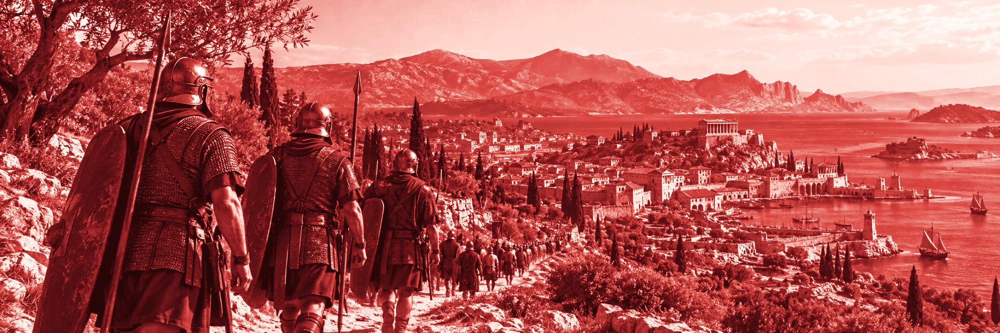
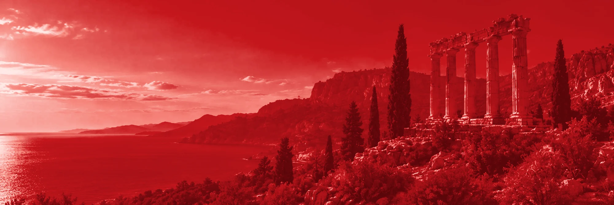

La historia
no termina.
Mod para Imperivm III HD con online por Steam, gestor de mods y múltiples mejoras de calidad de vida.
Descargar el mod
El proyecto,
al detalle.
01 Presentación
Imperivm Resurrected es un mod no oficial para Imperivm III: Great Battles of Rome HD, la versión de Steam. Es un archivo, winmm.dll, que el juego carga al arrancar. No modifica gbr.exe en disco y no incluye ningún archivo del juego: necesitas el original.
Cambia sobre todo cómo se dibuja el juego y cómo se conecta, y añade herramientas. También corrige cierres inesperados y algún fallo de jugabilidad, así que no todo se comporta exactamente como en el original.
- Pantalla. Ventana redimensionable o sin bordes, resoluciones hasta 2048x1536 y overlay de Steam.
- Online. Salas por Steam, sin abrir puertos ni usar VPN.
- Contenido adicional. Un gestor dentro del juego, con perfiles y un catálogo en GameBanana.
Estado del proyecto. No tiene relación con FX Interactive ni con Haemimont Games. Las versiones son 0.x y puede haber fallos.
02 Qué añade
- Imagen y sonido
- Direct3D 11 en lugar de GDI, vsync, escalado nítido, suave o entero, ventana redimensionable o sin bordes, resoluciones hasta 2048x1536 y vista extendida. El monitor no cambia de resolución. El audio usa un motor moderno y el juego se silencia en segundo plano.
- Multijugador
- Pantalla propia con lista de salas, chat, invitaciones a amigos de Steam y contraseña. Todos necesitan la misma versión del mod y el mismo contenido de jugabilidad; lo que falte se descarga del anfitrión. Si te caes, puedes volver a la partida en curso, siempre que el anfitrión lo permita y no pasen unos 30 segundos sin tráfico. No hay clasificatorias ni emparejamiento automático.
- Modo espectador
- Puedes ver una sala en juego con 30 segundos de retraso, con pausa y saltos de 10 segundos. Los espectadores también necesitan el mod. No hay chat ni cambio de jugador.
- Contenido adicional
- Activar y desactivar paquetes, perfiles, aviso de archivos compartidos y de valores que otro paquete pisa, y una pestaña para buscar en GameBanana. El orden de carga es automático. El gestor avisa de choques entre paquetes, pero no los resuelve.
- Trucos y mapa
- Ctrl+T abre un panel de trucos (recursos, curar, aparecer tropas y más). En una sala, el anfitrión decide si se permiten con la opción «Permitir trucos». La tecla M abre un mapa de zoom con niebla.
- Comodidad
- Autoguardado con varias ranuras, controles reasignables, velocidad de scroll ajustable y un panel con FPS, CPU, memoria y red.
- Informe de errores
- Desde el corazón del menú principal, Crear informe genera un zip en
Logs\imperivm\reportscon los registros y datos del equipo, con el SteamID, las IP y el usuario de Windows tapados. No envía nada: revisa el zip antes de compartirlo. - Actualizaciones
- Al arrancar consulta GitHub. Por defecto solo avisa; en
imperivm-mod.inipuedes elegir que instale sola o que no busque. Cada actualización lleva una firma que el mod comprueba. Si la versión nueva no llega al menú en tres arranques, vuelve a la anterior. - Para modders
- Un SDK para crear civilizaciones, unidades, habilidades, objetos, modos de victoria, mapas aleatorios y más, solo con archivos (las herramientas necesitan Node.js). Guías y ejemplos en Para modders.
Las versiones son 0.x y entre una y otra pueden cambiar cosas. Las notas de cada una están en la página de releases.
03 Instalar
Necesitas: Windows, Steam iniciado e Imperivm III: Great Battles of Rome HD instalado desde Steam.
- Descarga el
.zipde la última versión desde la página de releases. Contienewinmm.dlly una carpetamod. - Cierra el juego.
- En Steam, clic derecho sobre el juego, Administrar y Ver archivos locales. Se abre la carpeta donde está
gbr.exe. - Descomprime el zip en esa carpeta. Acepta reemplazar si pregunta.
- Abre el juego desde Steam.
Jugar online. Todos necesitan la misma versión del mod y el mismo contenido de jugabilidad. En el menú principal, Multijugador: uno crea la sala y los demás entran.
Tus ajustes se guardan en imperivm-mod.ini, en la carpeta del juego. El zip no lo incluye, así que al instalar una versión nueva se conservan.
Avisos de Windows. winmm.dll no tiene firma de código de Windows, así que SmartScreen o tu antivirus pueden avisar. No hay instalador.
Quitar el mod. Borra winmm.dll de la carpeta del juego. El juego vuelve a ser el original.
Si algo falla, usa Crear informe o mira los registros en Logs\imperivm, y cuéntalo en Discord o en GitHub. Más detalle en la guía y FAQ.
